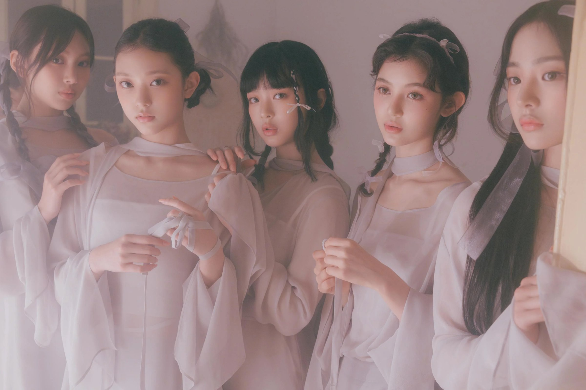

WELCOME TO THE WORLD OF NEWJEANS
NewJeans 是由韩国娱乐公司ADOR于2022年7月22日推出的女子团体，由三位韩国籍成员Minji、Haerin、Hyein，一位越南裔澳大利亚籍成员Hanni，以及一位韩澳双籍成员Danielle所组成。2022年8月1日发行首张迷你专辑《New Jeans》。
团名“NewJeans”由“New Jeans”组成，寓意像新的牛仔裤一样怎么穿都不会腻，亦具有“New Genes”的意思，指的是“迎来新一代流行音乐的团体”。
